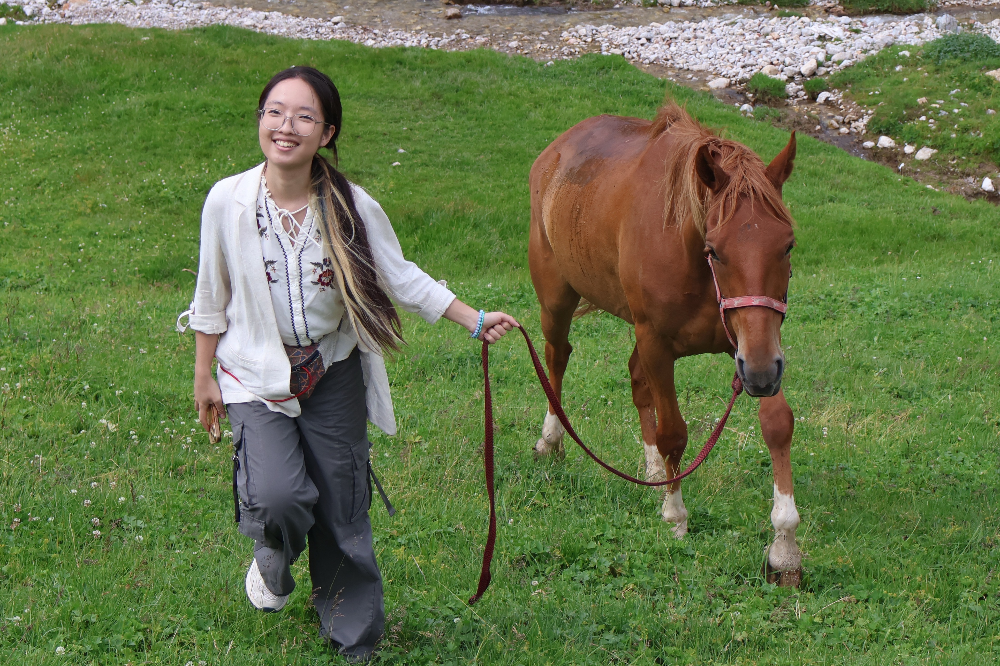
Hanyu (Petra) Shi
石涵玉
name in Chinese — "jade inside a rock"Born in Lanzhou in 2003, went to Shanghai for my undergraduate studies during COVID, and now pursuing my master’s in the Netherlands — from the highlands to sea level, farther and farther from where I began. I love languages, especially tracing the roots of scripts and sounds; I’m almost obsessed with travel, with a particular fondness for trains, borders, and vast open landscapes.
2003 年生于兰州，疫情时代去上海读本科，如今又到了荷兰读硕士，从高原到海平面，越走越远。喜欢语言，喜欢追溯文字、发音的根源；近乎痴迷地旅行，喜欢火车、边境、荒原。
01Shortcuts ❤快速跳转 ❤
02 Study · Experiences 在校经历
Lanzhou University
兰州大学 · 中学生英才计划
Selected for the national Young Talent Program in biology, joining Lanzhou University for mentor-guided study and early research experience.
入选中学生英才计划生物学科，在兰州大学接受高校导师指导，第一次接触大学科研训练。
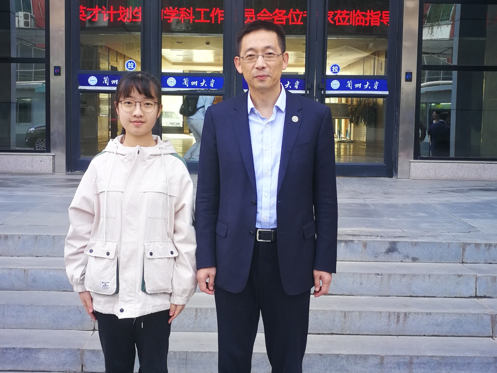
SJTU Zhiyuan Honors Program
上海交通大学致远荣誉计划
Selected for SJTU’s Zhiyuan Honors Program, an honors track built around academic depth, interdisciplinary learning and scientific exploration.
入选上海交通大学致远荣誉计划，在荣誉课程与跨学科培养体系中继续探索自己的学术方向。
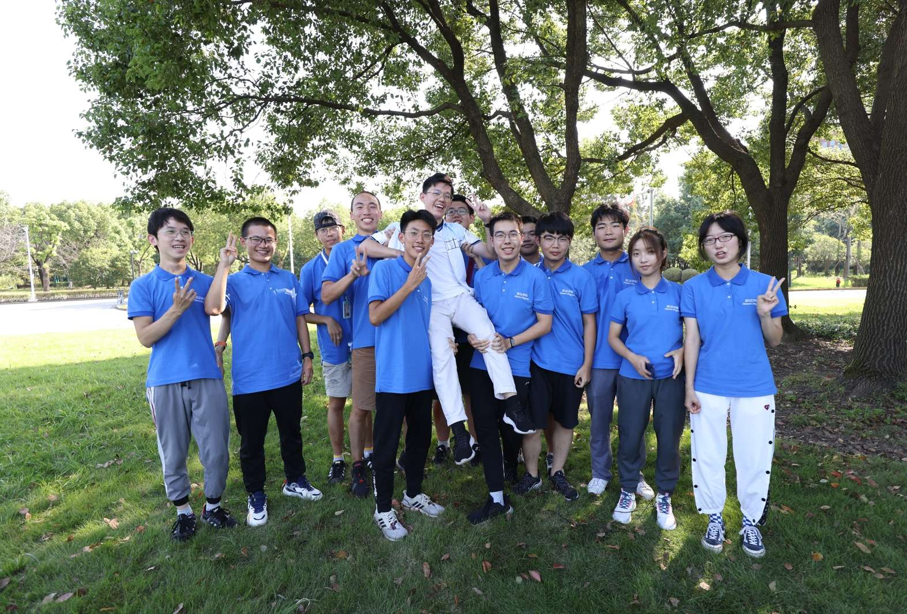
Unilever Hackathon
联合利华黑客马拉松
Explored consumer behaviour around biodegradable skincare, using public e-commerce data and quantitative analysis to uncover product opportunities. Worked across data research, product concept development and the final pitch in a multidisciplinary team — and took home the win.
围绕可生物降解护肤品开展消费者行为研究，通过公开电商数据与定量分析寻找产品机会。 在跨学科团队中参与数据研究、产品概念设计与最终方案展示，并获得黑客马拉松冠军。
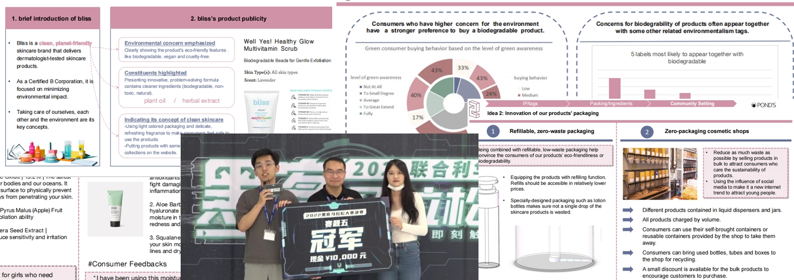
Nanyang Technological University
南洋理工大学暑期学校
Joined an international summer school at NTU and spent a few weeks studying and living in a very different cultural setting. My first solo trip abroad: Singapore was beautiful, the heat was relentless, and the cockroaches were astonishingly large.
赴新NTU参加国际暑校，在不同的文化环境中学习和生活。 第一次独自出国，新加坡的城市真美，天气真热，蟑螂真大。
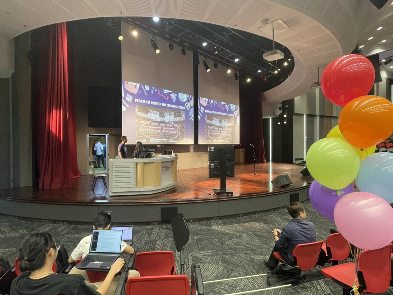
Migu Video | Product R&D Internship
咪咕视频 | 产品研发实习
Worked on large-scale video and live-streaming product workflows, including sports-broadcast data processing, content annotation and platform support. Researched intelligent segmentation for long-form video and helped move product features towards launch.
参与大型视频与直播产品研发流程，包括体育赛事直播数据整理、内容标注及平台流程支持；调研长视频智能切条等功能，参与推动功能上线。
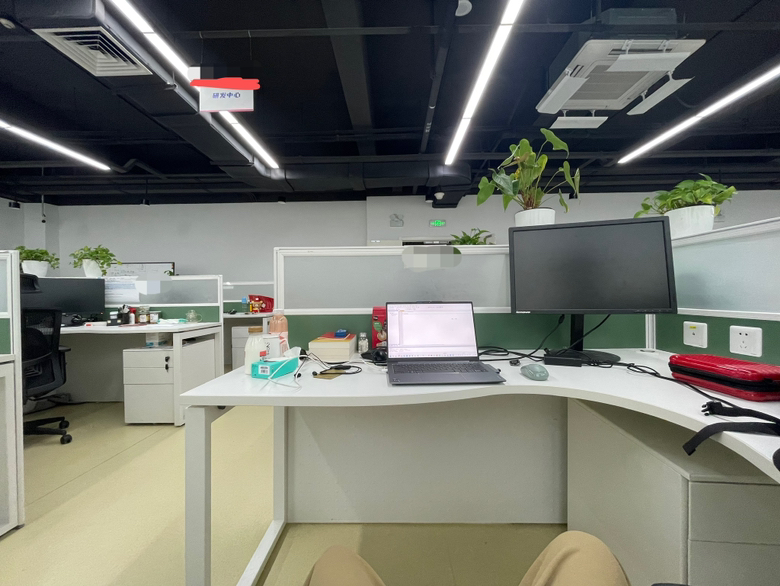
Programmable DC–DC Power Supply
可编程 DC–DC 电源
Built a TPS40200-based buck converter with a 10–20 V input and regulated 5 V / 2 A output, covering power-stage calculations, component selection, PCB design and system debugging. Added MCU-based monitoring and control on top of the analogue regulation loop to implement programmable current, protection and dual-channel current sharing.
基于 TPS40200 的 10–20 V 输入、5 V / 2 A 输出 Buck 电源，完成从功率级计算、器件选型到 PCB 与整机调试。 在模拟闭环稳压基础上加入 MCU 监测与控制，实现程控电流、保护以及双路并联均流。
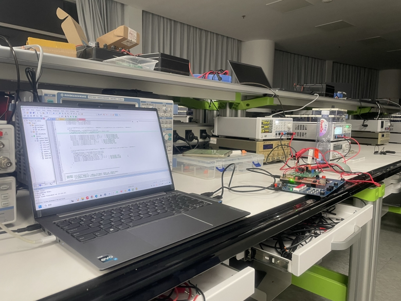
Modulation & Demodulation System
调制解调系统
A large-scale course project built around a complete modulation and demodulation chain, integrating modulation, demodulation and signal-processing modules into one end-to-end communication system.
大型课设，完整的调制解调通信链路，将调制、解调与信号处理模块连接为端到端系统。
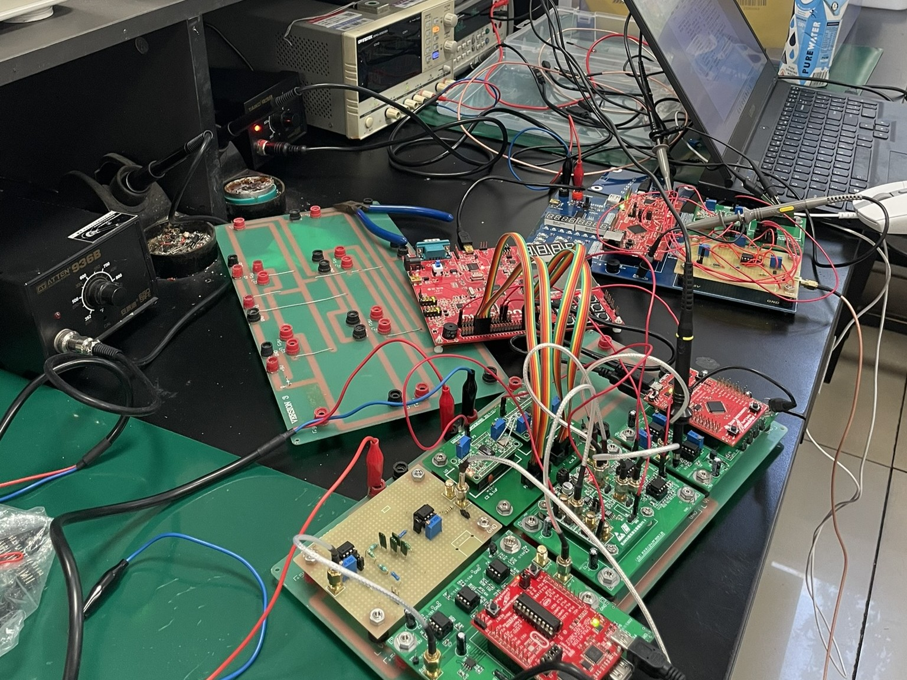
Shanghai Jiao Tong University Choir
上海交通大学合唱团
Where my choir journey really began: surrounded by wonderfully serious musicians, rehearsing everything from folk songs to pop arrangements, and discovering just how much I loved singing with other people.
我合唱梦开始的地方。和一群认真且专业的同学一起排练和演出，从民歌唱到流行改编，也是在这里真正发现了自己有多喜欢和别人一起唱歌。
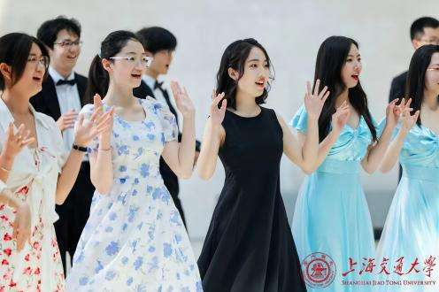
Multimodal Digital Stethoscope with Intelligent Heart–Lung Sound Separation
支持智能心肺音分离的多模态数字听诊器
Developed a wearable digital stethoscope integrating heart–lung sounds, ECG and body-temperature acquisition, and received First Prize in the IEEE CAS Student Design Competition. Led and contributed to requirements and competitor analysis while integrating the analogue front end, on-chip DSP and BLE; also deployed compressed sensing and the LungHeartAtMe heart–lung sound classification algorithm.
集心肺音、ECG 与体温采集于一体的可穿戴数字听诊器，获得 IEEE CAS 学生设计竞赛一等奖。主导并参与需求与竞品分析，集成模拟前端、片上DSP与BLE等模块； 部署压缩感知与心肺音分类算法（LungHeartAtMe）。
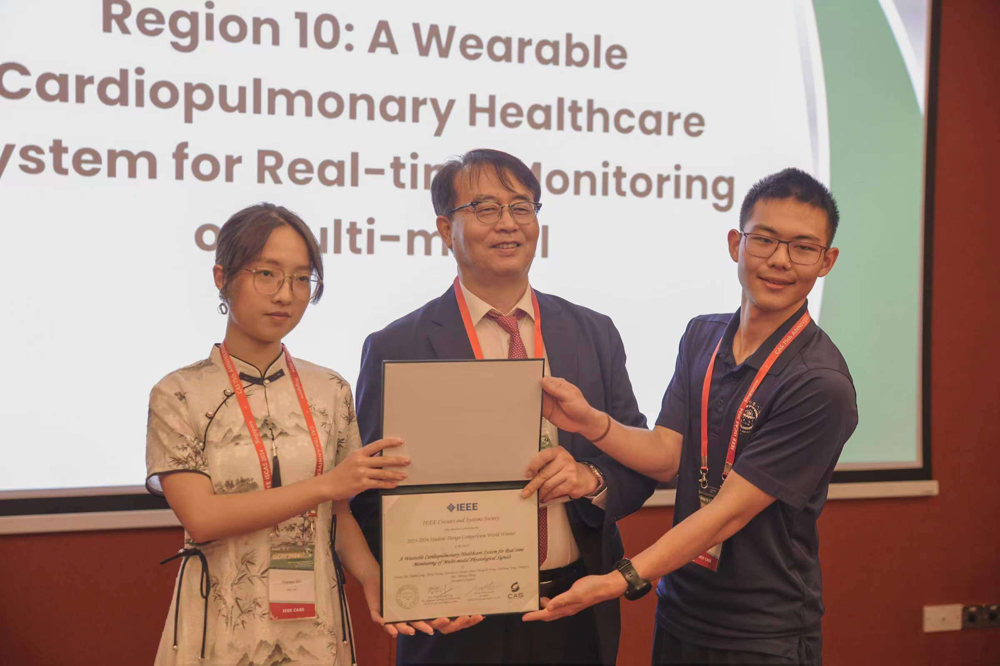
Hirain Technologies | Hardware Engineering Internship
经纬恒润 | 硬件实习
Worked on industrial-automation and railway electronic systems, covering component selection, board testing, hardware modifications, prototype assembly and ADC calibration. It was my first close look at the less glamorous — but very real — side of engineering: interfaces, reliability, test specifications, supply chains and product-level troubleshooting.
参与工业自动化与轨道交通电子系统开发，完成元器件选型、板卡测试、硬件修改、样机装配及 ADC 校准等工作。 第一次较完整地接触接口、可靠性、测试规范、供应链以及面向实际产品的工程调试流程。
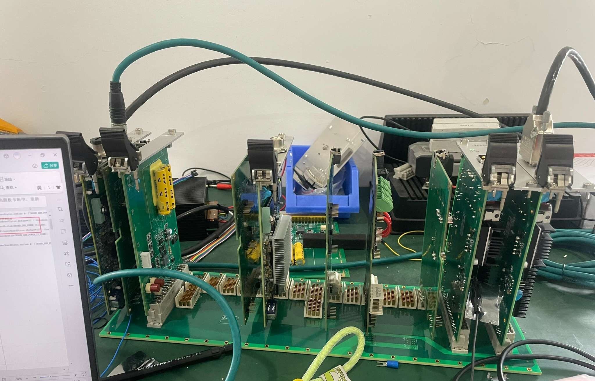
Design & Simulation of Optical Pooling Networks for AI Data Centers
面向 AI 数据中心的光池化网络设计与仿真
My bachelor thesis, “Design and Performance Analysis of an Optical Pooling Network Architecture for Artificial Intelligent Data Centers,” focused on optical interconnects and resource pooling in AI data centers. Starting from the system architecture, I studied network organisation and evaluated performance under different network and resource-allocation configurations.
本科毕业论文《面向人工智能数据中心的光池化网络架构设计与性能分析》关注 AI Data Center 中的光互连与资源池化。 从系统架构出发研究网络组织方式，并对不同网络与资源配置条件下的性能进行分析。
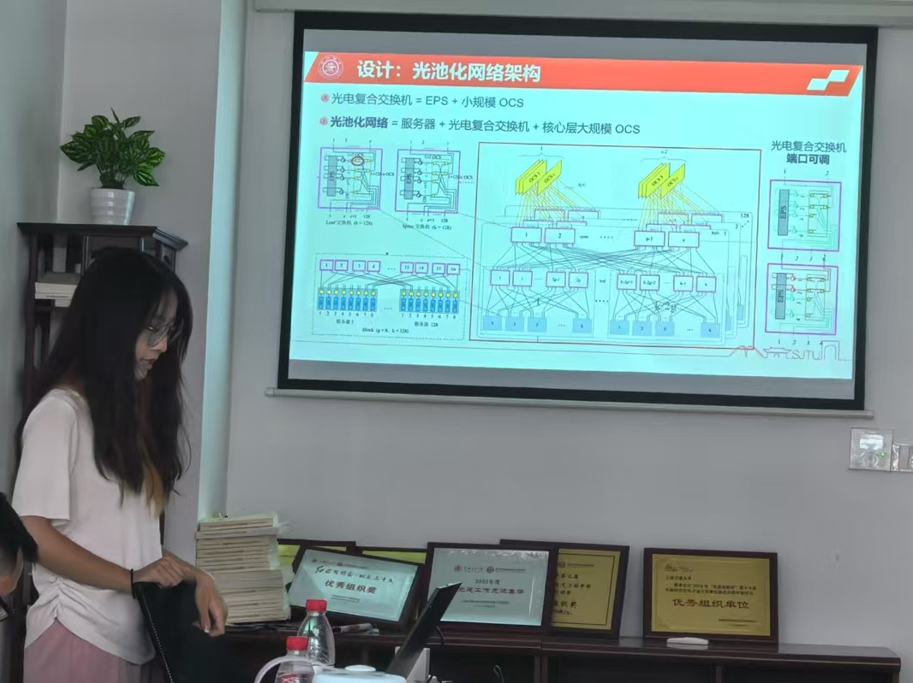
Shanghai Jiao Tong University
上海交通大学毕业
Graduated from Shanghai Jiao Tong University with a Bachelor of Engineering in Information Engineering.
毕业于上海交通大学，获信息工程专业工学学士学位。
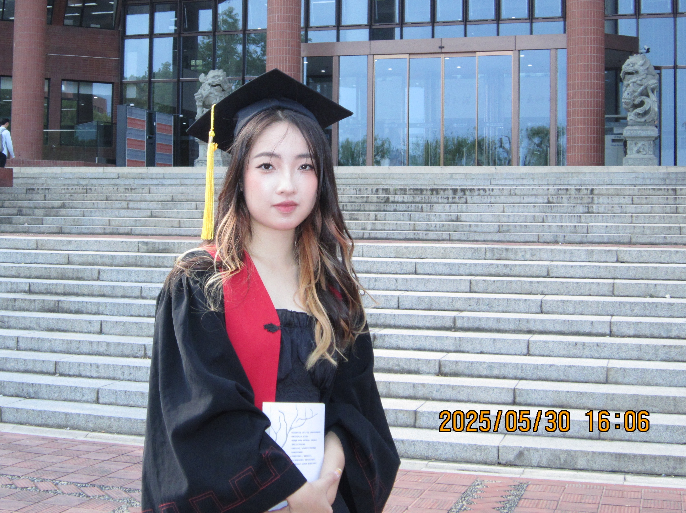
Krashna Musika · TU Delft
TU Delft Krashna 合唱团
Sang classical works with Krashna’s symphony orchestra and choir — a very different musical world from what I had known before. I eventually left after an experience I would rather not repeat, but the rehearsals, the concerts, and the simple pleasure of singing the great works are memories I still keep fondly.
在 Krashna 的交响乐团与合唱团中演唱古典名作，进入了一个和过去完全不同的音乐世界。可惜后来因为一些不愉快的经历离开了。（但是忘不了在代尔夫特烛光节唱圣诞歌的那一晚！）
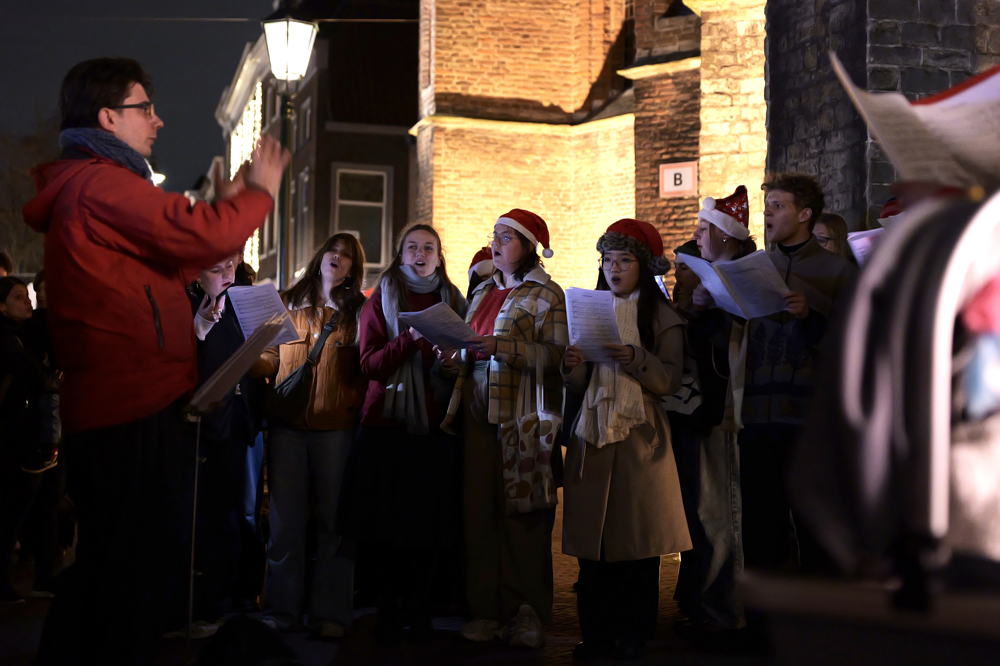
Gender & Diversity in Science, Technology and Society
科学、技术与社会中的性别与多样性
Selected as one of 30 participants from around 200 applicants for a TU Berlin course held around International Women’s Day; studied humanities and social theory in a wonderfully mixed group, asking how technology is shaped by society — and how it shapes society in return. I also wandered through Berlin in the middle of its Women’s Day celebrations, and still think back very fondly on that week.
正值国际妇女节，以30/200比例被选中在柏林工业大学参加课程。 在多元背景的小组中学习人文理论， 思考技术系统如何受到社会影响，又如何反过来塑造社会。 流连于妇女节柏林的盛况，常怀念那段快乐的时光。
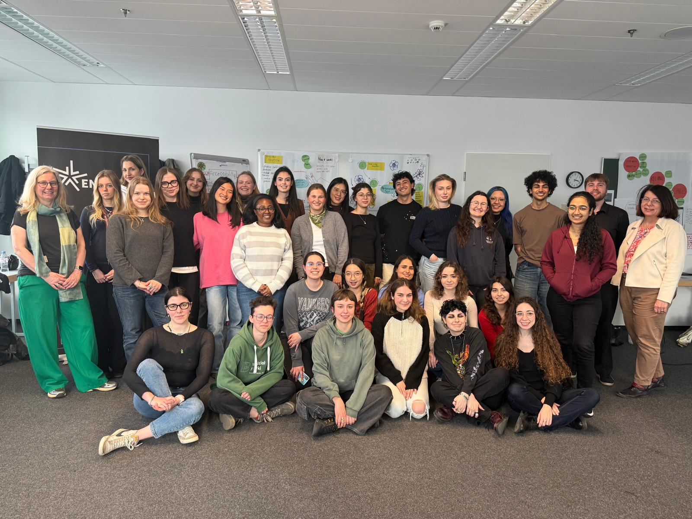
Second-Order Noise-Shaping TDC
二阶噪声整形TDC
Designed a second-order noise-shaping TDC in Cadence using a 180 nm process, with two multipath gated-ring oscillators and residue transfer providing second-order shaping of time-quantisation noise. The design achieved 54.9 dB SNDR at OSR 32.
基于Cadence的 180nm 工艺二阶噪声整形 TDC，以双多路径门控环形振荡器和残差传递实现二阶时间量化噪声整形。 设计在 OSR 32 下达到 54.9 dB SNDR。
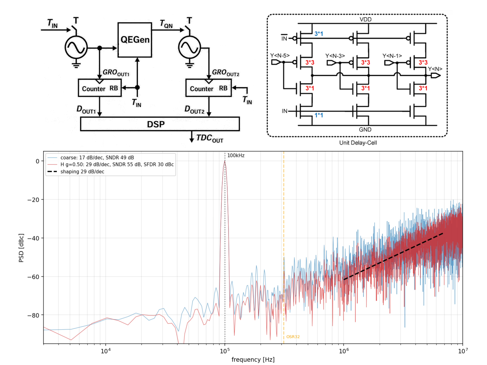
Reinier de Graaf Hospital | Joint Interdisciplinary Project
Reinier de Graaf 医院 | 跨学科联合实习（JIP）
Developing a robotic solution for radioactive-contamination handling in a nuclear-medicine environment — currently a work in progress. The project centres on integrated design and technical innovation while balancing value creation, social acceptance and engineering ethics.
开发面向核医学环境放射性污染处理的机器人方案。 侧重于综合设计和技术创新研究，兼顾价值创造、社会认可和工程伦理。
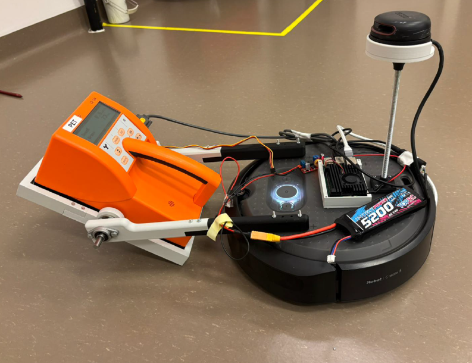
03Gallery我的足迹
Click a pin to open that city's photos.
点击地图上的城市，展开该城市的照片。
04China Tours甘肃&上海导游
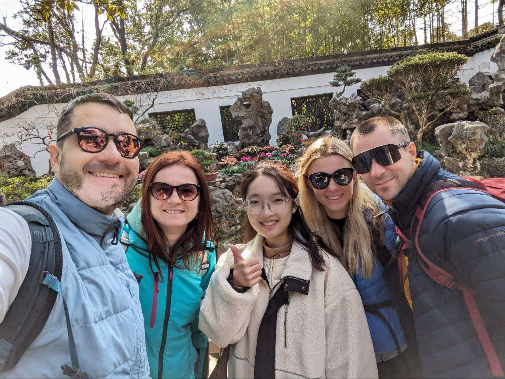
See China up close — from vibrant cities to vast landscapes.
这么近，那么美。
Guiding, for me, is a way to know more closely the places I come from and the places I pass through, while quietly sharing the curiosity and affection that years of travel have left with me. Shanghai moves with restless energy, its streets dense with everyday life; Gansu opens into vast mountains and rivers, long roads, and layers of history. I offer bespoke English-language tours for international visitors.
做导游，是想借一次次同行，更好地认识自己所来所往之处，也把这些年行走各地积累下来的好奇与热情，安静地分享给远道而来的人。上海有不断向前的速度、街巷里密集而鲜活的日常；甘肃则有辽阔的山河、漫长的道路，以及层层叠叠的历史。为国际游客提供英语定制导览。
See details & book查看详情与预约05Notes笔记碎片
Notes and posts from whatever I've worked on.
关于语言学习和各种乱七八糟东西的笔记。